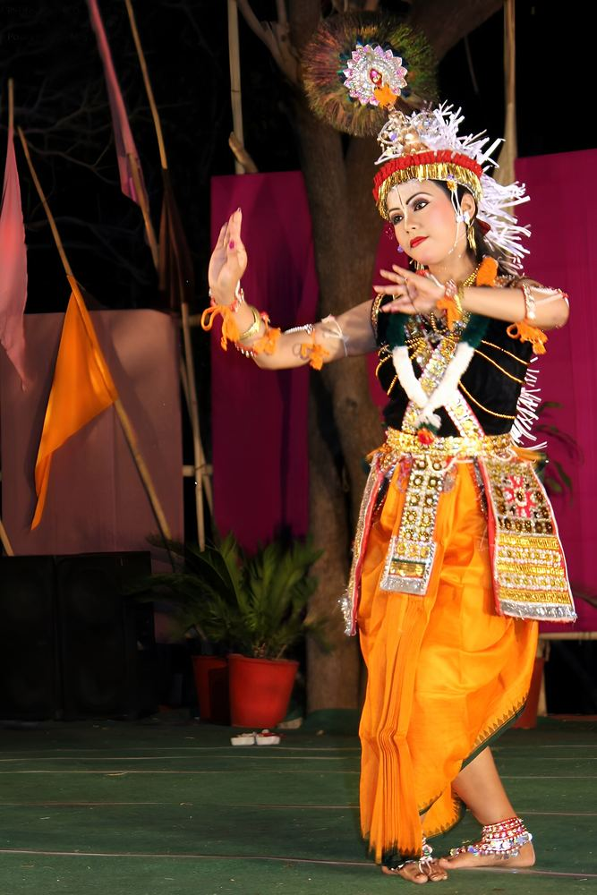

Ras Leela
Manipuri dance is one of India’s recognised classical forms. Its best-known work, the Ras Leela, retells the love of Radha and Krishna through slow, rounded movement; the dancers’ feet barely seem to touch the floor.
Watch for the potloi, the stiff, barrel-shaped skirt sewn with mirrors, and the fine veil over the dancers’ faces.
- When to see it
- Purnima (full-moon) nights in autumn, and stage shows in Imphal